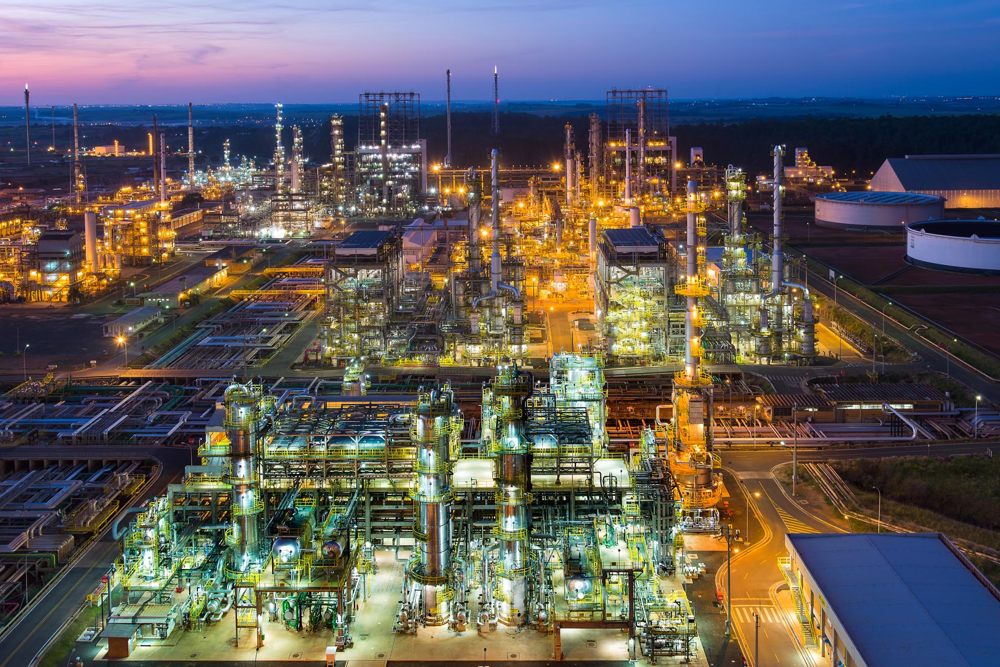

Infraestrutura HydroSense
Hardware e Software Projetados para a Indústria 4.0
Combinação perfeita de sensoriamento físico avançado e inteligência em nuvem.

Ambiente Físico
Sensores Não-Invasivos em Tubulações

Ambiente Digital